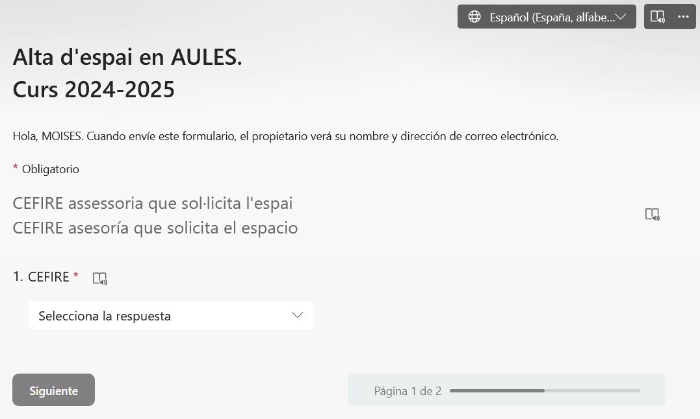
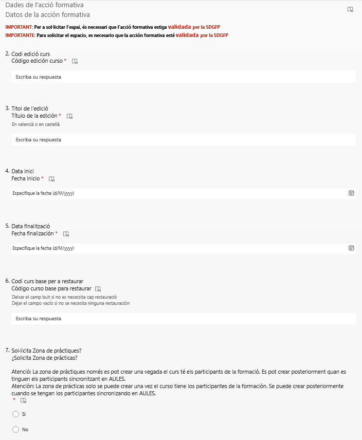

Una setmana abans del inici de l'inscripció hem de tindre tots els documents inicials per a que en eixa setmana valide l'acció formativa el Director i després el Subdirector General i tindre temps per si hi ha alguna errada en Fitxa Económica, etc...
CEFIRE IA i Pensament Computacional
Estat Proposta, Validació e Inscripció
Gesform
Hem de canviar l'estat de l'acció formativa a Proposta perquè puga validar la formació el Director i comunicar-li-ho pel mail: ma.lafuentealonso@edu.gva.es
Quan aparega l'estat de Validat Director estarem esperant què des de la Subdirecció General de Formació valide i canvi l'estat a Validat D.G.
A partir d'ací el primer dia de la data d'inscripció canviarà automàticament a l'estat Inscripció i els participants podran fer la seua inscripció a OviFor.
En l'Extintor de l'acció formativa, en Participantes Edición podem afegir un nou registre del/de la professor/a o ponent amb les hores que certifica, en el cas de diverses persones les hores que certifica cada un.
Gesform distinguix entre ponents i professors, si s'impartixen més de 19h és professor i si són menys de 19h és ponent. Intenteu evitar altres opcions com la de tutor ja que en moltes convocatòries no apareix la paraula tutor i pot fer que no li baremen correctament el mèrit.
Petició d'Aules
Una vegada Validada pel D.G. ja poguem realitzar la petició d'un Aules, per a la modalitat a distància o semipresencial o en cas necessari per a l'acció formativa en:


Obra publicada con Licencia Creative Commons Reconocimiento No comercial Compartir igual 4.0